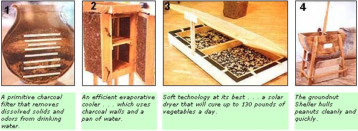

MOTHER's own Copthorne Macdonald recently returned from an extended European trip. During his travels, he attended the U.N. Conference of Science and Technology for Development (UNCSTD) in Vienna . . . the Non-Governmental Organization (NGO) Forum held in that same city... and Britain's Community Technology Festival (COMTEK). The following article is the third in a series of reports from Cop on these attempts to determine how technology (both hard and soft) can best meet the needs of the world's people.
The displays at Vienna's Messepalast (where the NGO Forum was held) provided an eye-opening variety of examples of hard and soft-as well as high and low-technology .. . and some of the most attention-getting exhibits were the actual working models of very simple tools developed for rural usage by the United Nations International Children's Emergency Fund (UNICEF). This U.N. agency-which focuses its efforts on the welfare of children-feels that one of the best ways to aid the world's youngsters is to help mothers fulfill their tots' all-important basic needs . . . so UNICEF has set up alternative technology projects, in several developing countries, to do just that.
Here's a quick look at a few of the most interesting-and useful-devices I saw at the conference.
TECHNOLOGICAL TRICKS
The multilevel, charcoal/gravel water filter (shown in Photo 1, mounted on top of a typical East African water jug) can remove floating matter, foul odors, and strange colors from water. Besides making drinking fluid more palatable, the simple filter will strain out some bacteria.
The need to chill food or other perishables often presents a problem in areas without electricity. A charcoal-walled evaporation cooler (such as the unit in Photo 2) can do the job. In a dry climate, it'll actually create a temperature drop of as much as 15 to 20°C. The chilling evaporation occurs when water from the pan on top of the cooler is transferred to the charcoal panels through a burlap wick.
The 1 ' X 3' X 6' solar vegetable dryer-shown in Photo 3-is said to be capable of drying up to 130 pounds of greens per day. Its frame lid is covered with a polyethylene sheet ... and thus provides an insulated, airtight chamber. The lower half of the unit (painted black inside to absorb the sunlight) houses the veggies, which are placed on screen-bottomed trays.
The device's temperature and ventilation are controlled by the removable wooden blocks fitted into slots around the dryer's bottom section. (UNICEF's solar tray is now being used in Nairobi, Kenya to dry-and thus preserve-the leafy vegetables needed so desperately to combat vitamin A deficiency in African children.)
How would you like to shell enough peanuts-at one sitting-for an entire family's daily use? A "groundnut" sheller like this one (in Photo 4) can save its user lots of time. When it's operated, a paddle "attacks" the goobers, but slightly clears the half-inch mesh panel in the implement's rounded bottom ... so both the broken shells and the nuts will sift through the screen to a box which has been placed on the floor below. Then-if there's a breeze-the harvest is simply thrown up into the air in handfuls: The nuts fall straight down, while the lighter husks (chaff) are blown away.
|
 PHOTOS BY THE AUTHOR |
|
|